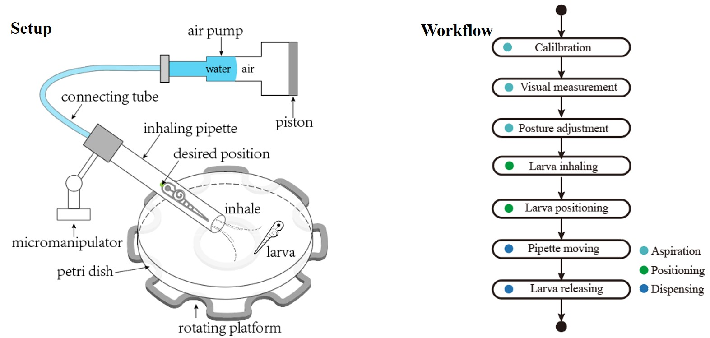
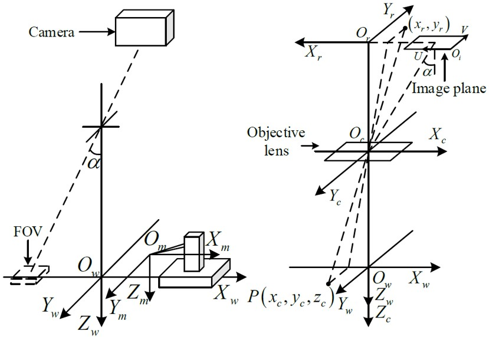
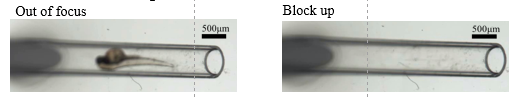
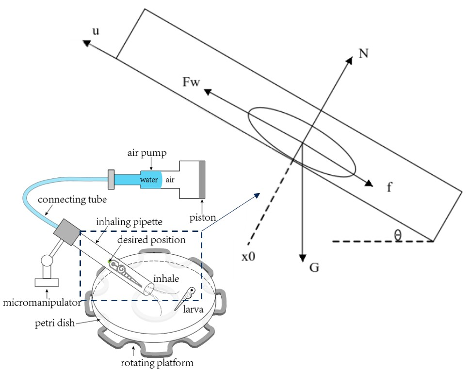

Positioning the larva inside a micropipette accurately and robustly plays a pivotal role in the transportation process. The objective of this system is to transfer a larva from one location to another and adjust its posture for micromanipulation, organ imaging, drug-specific phenotypic observation, etc. A well-known relevant system is VAST BioImager, which is a modular and expandable platform that is convenient to integrate with many microscopes. A typical application of VAST BioImager is to model the skeleton bones of zebrafish larvae in a super fast speed of several seconds.
The setup and workflow of this system are illustrated as follows:

Calibration. Compute the transformation matrix with the gradient-descent-based parametric identification.

Detect the object, analyse its posture.
Drive the mechanical device to adjust the object to the ideal orientation.
Inhale the larva into the pipette and position it to the desired position.
The micromanipulator moves the pipette to the releasing position.
Release larva.
The difficulties include:
Abrupt motion in the process of aspiration or dispensing, as illustrated in the following video:
Sensitive dynamic characteristics when positioning the object, shown in the video below:
Difficulties for video tracking, including the abruptive motion, objects that are out of focus and blocked up, etc.

To deal with the object’s abrupt motion, defocus, occlusion problems, a fast and reliable tracker is designed, achieving a processing velocity of over 100 frames per second and an locating accuracy within 5 pixels.
To model the background, an adapted Gaussian Mixture model is adopted, with equations as follows:
After that, subtract the frame from the background, and then the Otsu thresholding method, along with morphological operations, is performed to segment the whole contour. With the contour, the larval position is calculated, shown in the video below.
To model this system, the force analysis is conducted as follows:

\[\begin{array}{*{20}{l}}
{m\ddot x + K\ddot x + \frac{K}{b}\frac{{{P_0}S_{pip}^2}}{{{V_{air,0}}}}\left( {\frac{{m\ddot x + G\sin \theta }}{K} + \dot x} \right) = \frac{{K{P_0}{S_{pp}}{S_{pis}}}}{{b{V_{air,0}}}}u}\\
{m\ddot x + K\ddot x + \frac{K}{b}\frac{{{P_0}S_{pip}^2}}{{{V_{air,0}}}}\frac{m}{K}\ddot x + \frac{K}{b}\frac{{{P_0}S_{pip}^2}}{{{V_{air,0}}}}\frac{{G\sin \theta }}{K} + \frac{K}{b}\frac{{{P_0}S_{pip}^2}}{{{V_{air,0}}}}\dot x = \frac{{K{P_0}{S_{pip}}{S_{pis}}}}{{b{V_{air,0}}}}u}\\
{m\ddot x + \left( {\frac{{m{P_0}S_{pp}^2}}{{b{V_{air,0}}}} + K} \right)\ddot x + \frac{{K{P_0}S_{pip}^2}}{{b{V_{air,0}}}}\dot x + \frac{{{P_0}S_{pip}^2G\sin \theta }}{{b{V_{ijr,0}}}} = \frac{{K{P_0}{S_{pip}}{S_{pis}}}}{{b{V_{air,0}}}}u}
\end{array}\]
Abbreviate it in the fllowing form:
\[{a_1}\ddot x + {a_2}\ddot x + {a_3}\dot x + {a_4} = bu\]
The parameters of the dynamic model are identified by the frequency response test, after which the PID control algorithm is desinged, achieving the following control effect:
This system manages to position a larva to a desired position in the inclined micropipette for larva transfer and manipulation, which could hardly be achieved manually. Presently, the PID control effect is not optimal for larvae with different ages. Thus, I have been working on using the Adaptive Robust control to enhance the control performance, and extend its application to other organisms, such as embryo. I plan to write a paper and submit it to IEEE Transactions on Automation Science and Engineering.
Supervisor: Prof. Huijun Gao, IEEE Fellow and Professor of Department of Automation, Harbin Institute of Technology
Postgraduate student of Control Science and Engineering
His research interests include image processing, deep learning, adaptive Kalman Filter, and robotic micromanipulation with its biomedical applications.
 Illustration
Illustration